Van de negentien bevindingen die in november op alle pagina's stonden, zijn er dertien opgelost. De schakelknoppen in de cookiemelding hebben genoeg contrast, de tekst van de cookiemelding blijft zichtbaar bij 400% zoom en er is een skiplink. Het logo heeft een tekstalternatief en een toegankelijke naam met de volledige tekst "Programmabureau NZKG Noordzeekanaalgebied". De toegankelijke namen zijn Nederlands, de toetsenbordfocus blijft in het mobiele menu en de knop met de pijl heeft een naam. Het formulier voor de nieuwsbrief heeft autocomplete-attributen en eigen Nederlandse foutmeldingen, en krijgt op een klein scherm op het juiste moment focus.
Twee bevindingen zijn verhuisd. De knoppen die niet met het toetsenbord te bedienen zijn (#19) staan niet meer op alle pagina's; je vindt ze bij de pagina Zoekresultaten. De tekst in het menu die uit beeld raakt (#17) staat hieronder, met wat er veranderd is.
#2 - Gegevenstabel mist de juiste markering
Impact: Matig
Type: Content
WCAG: 1.3.1
EN: 9.1.3.1
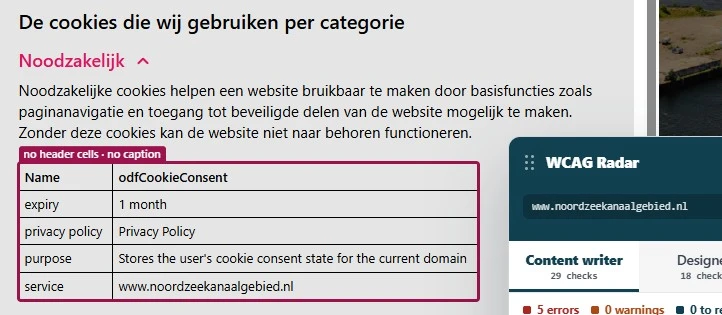
In de cookiemelding verschijnt een gegevenstabel als je op "Details bekijken" klikt en daarna op "Noodzakelijk" of "Statistieken". Alle cellen in die tabel zijn td-elementen, ook de cellen met de namen van de kolommen, zoals "Name".
Een gegevenstabel heeft een rij of kolom met koppen die bij de gegevens in de tabel horen. Alleen met de juiste opmaak kunnen schermlezers die relatie aan de bezoeker doorgeven.
Oplossing:
Zet de koppen in th-elementen en de gegevens in td-elementen. Een eenvoudige toegankelijke tabel ziet er zo uit:
<table>
<tr>
<th scope="col">Naam</th>
<th scope="col">Bewaartermijn</th>
</tr>
<tr>
<td>startTime</td>
<td>Sessie</td>
</tr>
</table>
#8 - Menu geeft geen informatie over de toestand van de submenu's
Impact: Serieus
Type: Techniek
WCAG: 4.1.2
EN: 9.4.1.2
Deze bevinding is voor de helft opgelost. De knop "Menu" geeft nu met aria-expanded door of het menu open of dicht staat. De submenu's doen dat nog niet.
In het menu hebben de links "VERDUURZAMING INDUSTRIE", "OPGAVEN FYSIEKE RUIMTE" en "SAMENWERKING" een submenu. Een blinde bezoeker hoort niet of dat submenu open of dicht staat.
Als een link een submenu kan tonen of verbergen, moet hulpsoftware kunnen bepalen of dat submenu zichtbaar of verborgen is.
Oplossing:
Gebruik hiervoor het attribuut aria-expanded, zoals nu al bij de knop "Menu".
#14 - strong-element is gebruikt voor opmaak
Impact: Klein
Type: Content
WCAG: 1.3.1
EN: 9.1.3.1
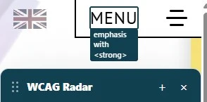
Op alle pagina's staat het woord "Menu" in de knop in een strong-element, alleen om het vet te maken. Hetzelfde zie je bij de tags bij nieuwsberichten, zoals "Samenwerking", en bij de contactgegevens, zoals "Adres:".
Het strong-element geeft aan dat een tekst extra nadruk krijgt. Het is dus niet bedoeld om tekst alleen vet te maken.
Ook in de lopende tekst van deze pagina's staan hele zinnen in een strong-element:
Dit is geen volledige lijst. Controleer ook de andere pagina's.
Oplossing:
Verwijder de strong-elementen die alleen voor de opmaak zijn en maak de tekst vet met CSS.
#15 - Onzichtbaar element krijgt toetsenbordfocus
Impact: Serieus
Type: Techniek
WCAG: 2.4.3
EN: 9.2.4.3
In de header komt de toetsenbordfocus na de link met het logo "Programmabureau NZKG noordzeekanaalgebied" op onzichtbare interactieve elementen terecht.
Daar is een plek bijgekomen. Op alle pagina's komt de toetsenbordfocus ook na de knop "Aanmelden" op een onzichtbaar interactief element terecht.
De toetsenbordfocus mag niet op onzichtbare links, knoppen of formuliervelden terechtkomen. Een bezoeker ziet dan niet waar de focus staat en kan zo'n element per ongeluk activeren.
Oplossing:
Zorg dat alleen zichtbare elementen toetsenbordfocus kunnen krijgen en dat de focusvolgorde logisch is.
#17 - Bezoekers die inzoomen tot 400% kunnen niet alle tekst in het menu lezen
Impact: Serieus
Type: Techniek
WCAG: 1.4.10
EN: 9.1.4.10
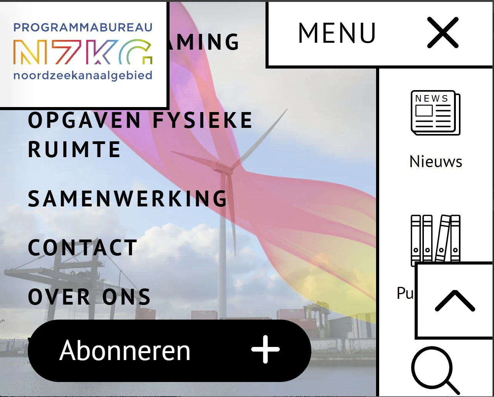
In november raakte de tekst in het menu al uit beeld bij 200% zoom. Bij 200% is dat opgelost. Bij 400% gebeurt het nog wel, en daarom valt deze bevinding nu onder succescriterium 1.4.10 in plaats van 1.4.4.
Bekijk je de pagina's op een scherm van 1280 bij 1024 pixels en zoom je in tot 400%, dan raakt in het menu tekst gedeeltelijk of helemaal uit beeld. Het gaat om de link "Home", de link "Verduurzaming industrie", de link "Zoeken" en andere.
Oplossing:
Zorg dat alles werkt en leesbaar blijft als een bezoeker inzoomt tot 400% op een scherm van 1280 bij 1024 pixels.
#59 - Kleurcontrast van de knoppen in de cookiemelding is te laagNieuw
Impact: Matig
Type: Techniek
WCAG: 1.4.3
EN: 9.1.4.3
Nieuwe bevinding die is ontstaan na het oplossen van een eerder gevonden bevinding.
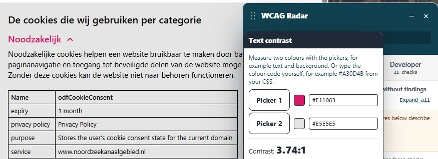
Klik in de cookiemelding op "Details bekijken" en daarna op een knop als "Noodzakelijk". De tekst op de knop wordt dan roze (#E11063) op een grijze achtergrond (#E5E5E5). De contrastratio is 3,7:1. Niet iedere bezoeker kan die tekst lezen.
Oplossing:
Deze tekst is kleiner dan 19px, daarom moet de contrastratio minimaal 4,5:1 zijn. Op https://properaccess.nl/hoe-test-ik-kleurcontrast/ staat een instructie die uitlegt hoe je kleurcontrast test.
#60 - Toetsenbordfocus is niet zichtbaar op de link met het logo in het menuNieuw
Impact: Serieus
Type: Techniek
WCAG: 2.4.7
EN: 9.2.4.7
Nieuwe bevinding die is ontstaan na het oplossen van een eerder gevonden bevinding.
Open je het menu, dan heeft de link met het logo "Programmabureau NZKG Noordzeekanaalgebied" geen zichtbare toetsenbordfocus.
Bezoekers die met het toetsenbord navigeren, moeten kunnen zien waar de focus staat. Anders weten ze niet wanneer ze op Enter kunnen drukken om een link te volgen.
Oplossing:
Geef de link een zichtbare focusstijl. Dat kan de standaardfocusrand van de browser zijn of een eigen stijl met genoeg contrast.
#61 - Links met logo's zijn niet met het toetsenbord te bereikenNieuw
Impact: Serieus
Type: Techniek
WCAG: 2.1.1
EN: 9.2.1.1
Bovenaan de pagina's staan links met logo's, zoals "Gebiedsbiografie NZKG", "Hydrogen Hub Noord-Holland" en andere. Die links hebben tabindex="-1". Daardoor krijgen ze geen toetsenbordfocus en kun je ze niet met het toetsenbord bedienen. Hetzelfde geldt voor de link "Bekijk deze pagina in het Engels".
Alle interactieve elementen moeten met alleen het toetsenbord te bedienen zijn.
Oplossing:
Verwijder tabindex="-1" van deze links. Een a-element met een href krijgt dan vanzelf toetsenbordfocus en werkt met Enter.
Link naar pagina: https://www.noordzeekanaalgebied.nl/zoeken/
Van de twee bevindingen op deze pagina is er één opgelost: bij 400% zoom bedekken de filters de zoekresultaten niet meer. De achtergrond van de ingevoerde zoektekst verandert ook niet meer steeds van kleur, maar het contrast is nog te laag. Twee bevindingen die in november elders stonden, staan nu hier, omdat ze op de andere pagina's zijn opgelost.
#51 - Kleurcontrast van tekst is te laag (tekst kleiner dan 24px en niet vetgedrukt)
Impact: Matig
Type: Techniek
WCAG: 1.4.3
EN: 9.1.4.3
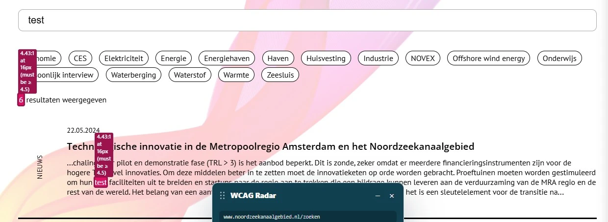
Typ je tekst in het zoekveld, dan staat die tekst wit op een roze achtergrond (#EC0060). In november veranderde die achtergrond steeds van kleur. Nu is de kleur vast, maar de contrastratio is 4,4:1. Dat is net te weinig. Hetzelfde zie je bij het filter op deze pagina.
Oplossing:
Deze tekst is kleiner dan 24px en niet vetgedrukt, daarom moet de contrastratio minimaal 4,5:1 zijn. Op https://properaccess.nl/hoe-test-ik-kleurcontrast/ staat een instructie die uitlegt hoe je kleurcontrast test.
#19 - Knoppen zijn niet te bedienen met het toetsenbord
Impact: Serieus
Type: Techniek
WCAG: 2.1.1
EN: 9.2.1.1
Deze bevinding is grotendeels opgelost. De knop met het pijltje omhoog is met het toetsenbord te bedienen, net als de filters op de pagina's Nieuws en Publications.
Op deze pagina staan in de filters nog knoppen die je niet met het toetsenbord kunt bedienen. Hetzelfde geldt voor de plusknoppen rechts van de koppen "Waterstof" en "Koolstof" op https://www.noordzeekanaalgebied.nl/programmas/energie/.
Oplossing:
Zorg dat alle filterknoppen met het toetsenbord te openen en te gebruiken zijn. Dat kan door display: none weg te halen bij de input-elementen.
#25 - Het geselecteerde keuzevakje ziet er anders uit, maar de status staat niet in de code
Impact: Matig
Type: Techniek
WCAG: 1.3.1
EN: 9.1.3.1
Op de pagina Nieuws is deze bevinding opgelost. Op deze pagina nog niet.
Het filter op deze pagina laat zien welke optie is geselecteerd: die ziet er anders uit dan de andere. In de code staat niet welk keuzevakje is aangevinkt. Een schermlezer kan dat dus niet aan een blinde bezoeker doorgeven.
Gebruik je een standaard input type="checkbox", dan houdt de browser die status zelf bij. Wordt het keuzevakje verborgen of vervangen door een eigen vormgeving, dan kan hulpsoftware de status niet meer lezen.
Oplossing:
Gebruik het standaard HTML-element <input type="checkbox"> en verberg het niet voor hulpsoftware.
Link naar pagina: https://www.noordzeekanaalgebied.nl/nieuwsberichten
Van de twee bevindingen op deze pagina is er één opgelost: het filter geeft door welk keuzevakje is aangevinkt. Van de andere bevinding is de helft opgelost. De grijze tags op lichtgrijs hebben genoeg contrast.
#24 - Kleurcontrast van tekst is te laag (tekst kleiner dan 24px en niet vetgedrukt)
Impact: Matig
Type: Techniek
WCAG: 1.4.3
EN: 9.1.4.3
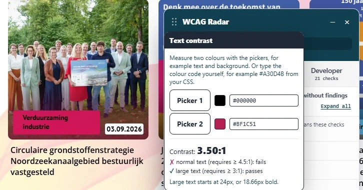
Op deze pagina staat de zwarte tekst "Verduurzaming industrie" op een rode achtergrond (#BF1C51). De contrastratio is 3,5:1.
De rode kleur is veranderd. In november was hij #C41E63, met een contrastratio van 3,7:1. Het contrast is dus iets lager geworden.
Oplossing:
Deze tekst is kleiner dan 24px en niet vetgedrukt, daarom moet de contrastratio minimaal 4,5:1 zijn. Op https://properaccess.nl/hoe-test-ik-kleurcontrast/ staat een instructie die uitlegt hoe je kleurcontrast test.
Link naar pagina: https://www.noordzeekanaalgebied.nl/programmas/regionale-samenwerking/
Van de acht bevindingen op deze pagina zijn er drie opgelost. De toetsenbordfocus is zichtbaar op de links "Verduurzaming industrie", "Opgaven fysieke ruimte" en "Samenwerking". De links hebben genoeg contrast als je er met de muis overheen gaat, en bij 400% zoom is er geen horizontale scrollbalk meer. Er is één nieuwe bevinding.
#26 - strong-element in plaats van kop-element
Impact: Matig
Type: Content
WCAG: 1.3.1
EN: 9.1.3.1
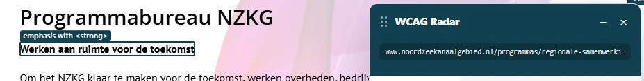
Op deze pagina zijn teksten die als kop werken opgemaakt met een strong-element in plaats van een kop-element. Het gaat om "Werken aan ruimte voor de toekomst", "Samen koers zetten voor het gebied", "Rol publieke partijen" en andere.
Koppen gebruik je om een tekst te structureren. Alleen als je ze met een kop-element markeert, zoals h2, begrijpt hulpsoftware dat het een kop is. Het strong-element gebruik je om nadruk te geven aan een paar woorden of een deel van een zin.
Oplossing:
Verwijder het strong-element en markeer deze koppen met het juiste kop-element, zoals h2 of h3.
#29 - Contrast van tekst in afbeelding is te laag
Impact: Matig
Type: Content
WCAG: 1.4.3
EN: 9.1.4.3
Op deze pagina staan afbeeldingen met tekst erin. In de afbeelding met de tekst "Klik op de afbeelding voor een grotere weergave." staat witte tekst op een oranje achtergrond (#D94722). De contrastratio is 4,3:1.
In de afbeelding met de tekst "Klik op de afbeelding om te zien welke organisaties samenwerken in het Bestuursplatform NZKG." staat witte tekst op groen (#7FB73D) en blauw (#52AFE4). De contrastratio is 2,4:1.
Controleer ook de andere afbeeldingen op deze pagina en op https://www.noordzeekanaalgebied.nl/programmas/energie/.
Oplossing:
Tekst die kleiner is dan 24px, en vetgedrukte tekst kleiner dan 19px, moet een contrastratio van minimaal 4,5:1 hebben. Voor grotere tekst is 3,0:1 genoeg.
#30 - Link heeft geen tekst, waardoor het linkdoel onbekend is
Impact: Matig
Type: Techniek
WCAG: 2.4.4
EN: 9.2.4.4
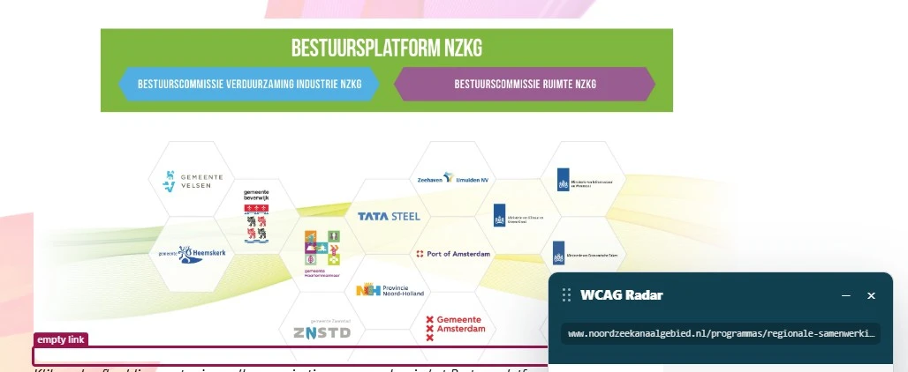
Op deze pagina staan afbeeldingen die ook een link zijn, maar de link heeft geen inhoud en dus geen herkenbaar doel. Een voorbeeld is de afbeelding onder "Klik op de afbeelding voor een grotere weergave.". Een blinde bezoeker weet niet waar zo'n link heen gaat.
Hetzelfde probleem staat op https://www.noordzeekanaalgebied.nl/programmas/ruimte/ en https://www.noordzeekanaalgebied.nl/programmas/energie/.
Oplossing:
Geef de link inhoud. Dat kan op twee manieren:
- zet beschrijvende tekst in het
a-element;
- zet een
aria-label op de link met een korte beschrijving van de bestemming.
#31 - Link heeft geen toegankelijke naam
Impact: Serieus
Type: Techniek
WCAG: 4.1.2
EN: 9.4.1.2
Op deze pagina staan afbeeldingen die ook een link zijn, maar die link heeft geen toegankelijke naam. Een voorbeeld is de afbeelding onder "Klik op de afbeelding voor een grotere weergave.". Bezoekers met een schermlezer weten dan niet wat de link doet of waar hij heen gaat.
Hetzelfde probleem staat op https://www.noordzeekanaalgebied.nl/programmas/ruimte/ en https://www.noordzeekanaalgebied.nl/programmas/energie/.
Oplossing:
Geef de link een toegankelijke naam, met linktekst, een aria-label of een alt-tekst op de afbeelding.
#33 - Tekstalternatief van complexe afbeelding ontbreekt
Impact: Matig
Type: Content
WCAG: 1.1.1
EN: 9.1.1.1
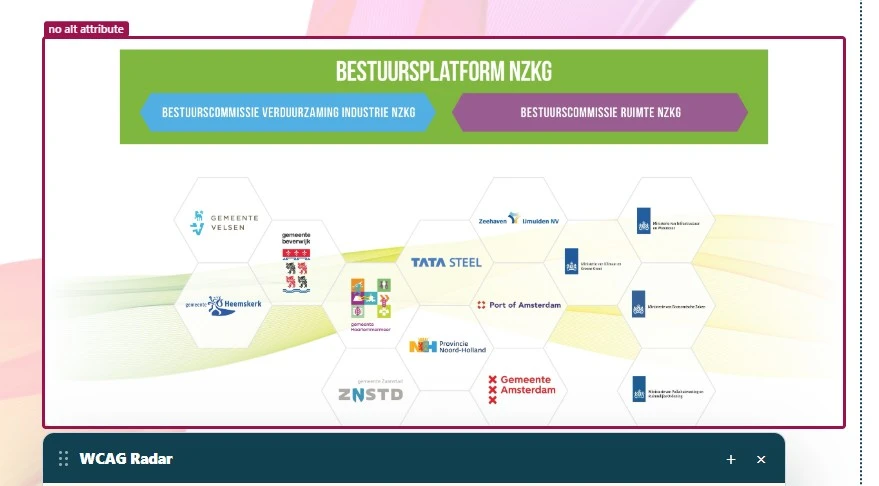
Op deze pagina staat onder "Programmabureau NZKG" een complexe afbeelding zonder tekstalternatief. Het img-element heeft geen alt-attribuut. Er staan meer afbeeldingen met hetzelfde probleem op de pagina.
Hetzelfde zie je op https://www.noordzeekanaalgebied.nl/programmas/energie/ onder de koppen "Programma Verduurzaming Industrie/ Energietransitie NZKG" en "Waterstof".
Complexe afbeeldingen, zoals infographics en schema's, bevatten meer informatie dan in een alt-tekst van 150 tekens past. Die informatie maak je toegankelijk met twee tekstalternatieven: een korte en een lange beschrijving.
Oplossing:
Geef in de korte beschrijving, meestal de alt-tekst, aan waar de lange beschrijving staat. De lange beschrijving kan als tekst op de pagina zelf staan, op een andere pagina of in een bestand om te downloaden.
Link naar pagina: https://www.noordzeekanaalgebied.nl/programmas/ruimte/
Van de vijf bevindingen op deze pagina is er één opgelost: de Vimeo-speler gebruikt geen sneltoetsen met één letter meer. De bevinding over het contrast van de groene knoppen (#38) staat nog open en is beschreven bij de pagina over Atlas Plabeka.
#34 - Video speelt automatisch af
Impact: Serieus
Type: Techniek
WCAG: 2.2.2
EN: 9.2.2.2
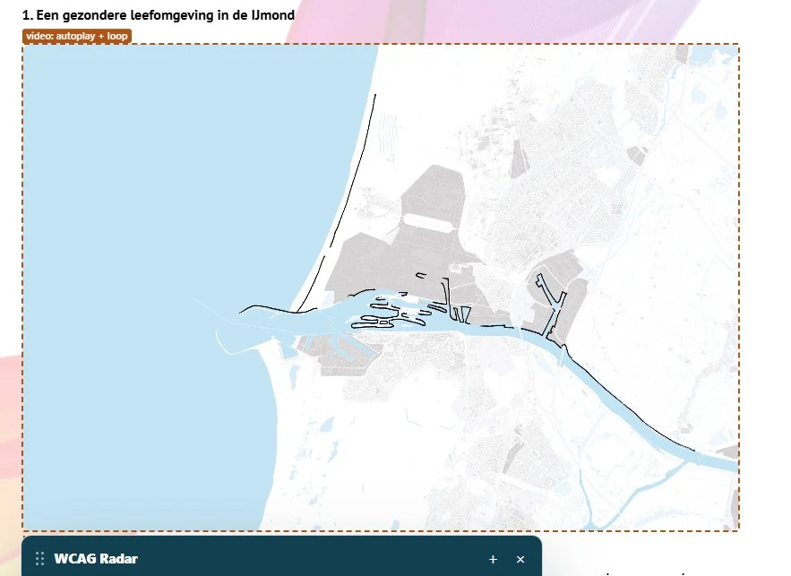
Op deze pagina staan video's die vanzelf afspelen en die je niet kunt pauzeren of stoppen. Een voorbeeld is de video onder de kop "Een gezondere leefomgeving in de IJmond".
Voor mensen met een cognitieve beperking is dat storend. De beweging leidt steeds af terwijl ze de tekst op de pagina proberen te lezen.
Oplossing:
Zorg dat bezoekers deze video's kunnen stoppen, pauzeren of verbergen. Dat geldt voor alle bewegende, knipperende, scrollende of automatisch vernieuwende inhoud die vanzelf start, langer dan 5 seconden duurt en naast andere inhoud staat.
#35 - Het type inhoud van het iframe staat niet in het title-attribuut
Impact: Matig
Type: Content
WCAG: 2.4.6
EN: 9.2.4.6
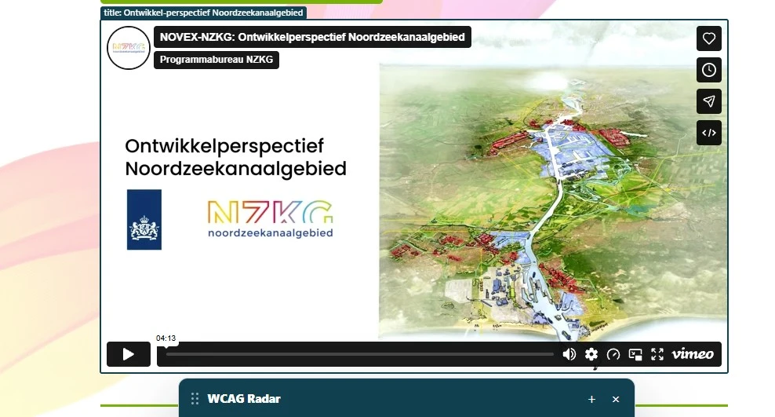
Op deze pagina staat een iframe met het title-attribuut "Ontwikkel-perspectief Noordzeekanaalgebied".
In het title-attribuut van een iframe hoort te staan wat voor inhoud het is, bijvoorbeeld een video of een podcast, en waar die over gaat. Met die beschrijving kunnen bezoekers met hulpsoftware beslissen of ze de inhoud willen bekijken.
Oplossing:
Pas de tekst van het title-attribuut aan, zodat er staat wat voor inhoud het iframe bevat en waar die over gaat.
#37 - Video heeft geen ondertiteling
Impact: Matig
Type: Content
WCAG: 1.2.2
EN: 9.1.2.2
Op deze pagina staat de video "Ontwikkelperspectief NZKG" met gesproken tekst, zonder ondertiteling.
Bezoekers die doof of slechthorend zijn, hebben ondertitels nodig om de inhoud van de video te volgen.
Oplossing:
Voeg ondertiteling toe aan de video.
Link naar pagina: https://www.noordzeekanaalgebied.nl/
Link naar PDF: https://www.noordzeekanaalgebied.nl/uploads/nzkg-jaarverslag-2025-def.pdf
Dit PDF-document is nieuw in het onderzoek. De twee PDF's uit november staan niet meer op de homepagina. Daarom hebben we twee PDF's onderzocht die er nu wel staan.
#63 - PDF-document heeft geen tagsNieuw
Impact: Serieus
Type: Content
WCAG: 1.3.1
EN: 10.1.3.1
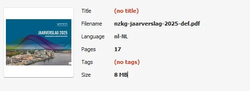
Dit PDF-document heeft geen tags. Schermlezers kunnen de inhoud daardoor niet goed voorlezen.
We konden het PDF-document daardoor ook niet volledig onderzoeken. Het gaat om alle succescriteria die met de tags te maken hebben, zoals koppen en tekstalternatieven bij afbeeldingen. Als je de tags toevoegt, kunnen er dus nieuwe problemen zichtbaar worden.
Oplossing:
Voeg tags toe die de structuur van het document vastleggen.
#64 - PDF-document heeft geen titelNieuw
Impact: Matig
Type: Content
WCAG: 2.4.2
EN: 10.2.4.2
In de eigenschappen van dit PDF-document staat geen titel.
Opent iemand het document in een PDF-lezer of een browser, dan staat bovenaan de bestandsnaam. Met een titel in de eigenschappen staat daar de titel. Zo zien bezoekers meteen of het document is wat ze zoeken.
Oplossing:
Geef het document een titel in de eigenschappen. In Adobe Acrobat doe je dat zo:
- Ga naar Bestand > Eigenschappen.
- Open het tabblad Beschrijving en vul bij Titel een titel in die zegt waar het document over gaat.
- Kies op het tabblad Beginweergave bij Weergeven "Documenttitel".
- Klik op OK en sla het bestand op.
#65 - Kleurcontrast van kleine tekst is te laagNieuw
Impact: Matig
Type: Content
WCAG: 1.4.3
EN: 10.1.4.3
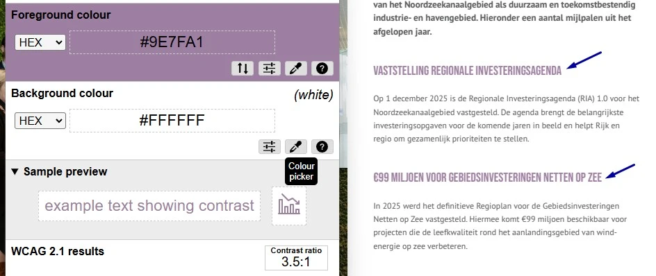
Op pagina 5 van dit PDF-document staat paarse tekst (#9E7FA1) op een witte achtergrond, zoals "VASTSTELLING REGIONALE INVESTERINGSAGENDA" en "€99 MILJOEN VOOR GEBIEDSINVESTERINGEN NETTEN OP ZEE". De contrastratio is 3,5:1. Die kleur staat ook op andere pagina's.
Nog een paar voorbeelden:
- Op pagina 8 staat de groene tekst (
#AEC835) "BELANGRIJKSTE RESULTATEN IN 2025" op wit. De contrastratio is 1,9:1.
- Op pagina 10 staat dezelfde tekst in oranje (
#E8992D) op wit. De contrastratio is 2,3:1.
- Op pagina 14 staat in de cirkeldiagrammen witte tekst, zoals "50%", op blauw (
#4BABE1), oranje (#E5852E) en groen (#7DB43E). De contrastratio is lager dan 2,7:1.
Oplossing:
Pas de kleur van de tekst of de achtergrond aan, zodat de contrastratio minimaal 4,5:1 is. Controleer de nieuwe kleuren met de Colour Contrast Analyser voordat je het PDF-document publiceert.
#66 - Alleen kleur gebruikt in de legenda bij de cirkeldiagrammenNieuw
Impact: Matig
Type: Content
WCAG: 1.4.1
EN: 10.1.4.1
Op pagina 14 van dit PDF-document staan onder de tekst "Herkomst en besteding van middelen" cirkeldiagrammen. Welk deel bij welke categorie in de legenda hoort, zie je alleen aan de kleur. Wie kleuren niet goed kan zien of onderscheiden, kan de diagrammen niet lezen.
Oplossing:
Gebruik naast kleur ook een ander verschil, zoals arcering of een patroon, of zet het label direct bij het deel van de cirkel.
Link naar pagina: https://www.noordzeekanaalgebied.nl/
Link naar PDF: https://www.noordzeekanaalgebied.nl/uploads/231219-nzkg-ontwikkelperspectief-boekje-spreads-lowres-def.pdf
Ook dit PDF-document is nieuw in het onderzoek, om dezelfde reden als het jaarverslag.
#67 - PDF-document heeft geen tagsNieuw
Impact: Serieus
Type: Content
WCAG: 1.3.1
EN: 10.1.3.1
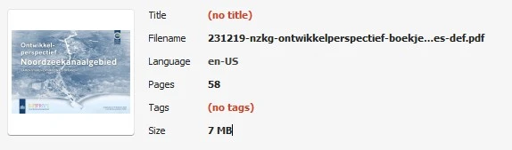
Dit PDF-document heeft geen tags. Schermlezers kunnen de inhoud daardoor niet goed voorlezen.
We konden het PDF-document daardoor ook niet volledig onderzoeken. Het gaat om alle succescriteria die met de tags te maken hebben, zoals koppen en tekstalternatieven bij afbeeldingen. Als je de tags toevoegt, kunnen er dus nieuwe problemen zichtbaar worden.
Oplossing:
Voeg tags toe die de structuur van het document vastleggen.
#68 - PDF-document heeft geen titelNieuw
Impact: Matig
Type: Content
WCAG: 2.4.2
EN: 10.2.4.2
In de eigenschappen van dit PDF-document staat geen titel. Bovenaan in de PDF-lezer staat daardoor de bestandsnaam.
Oplossing:
Geef het document een titel in de eigenschappen, op dezelfde manier als bij bevinding #64.
#69 - Alleen kleur gebruikt in de legenda bij grafiekenNieuw
Impact: Matig
Type: Content
WCAG: 1.4.1
EN: 10.1.4.1
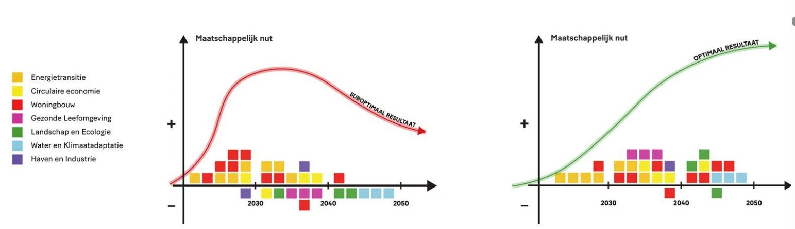
Op pagina 15 van dit PDF-document staan grafieken. Welke balk bij welke categorie in de legenda hoort, zie je alleen aan de kleur. Wie kleuren niet goed kan zien of onderscheiden, kan de grafieken niet lezen. Hetzelfde zie je op pagina 21, 26, 32 en andere.
Oplossing:
Gebruik naast kleur ook een ander verschil, zoals arcering of een patroon, of zet het label direct bij de balk.
#70 - Contrast van lijnen in grafieken is te laagNieuw
Impact: Matig
Type: Content
WCAG: 1.4.11
EN: 10.1.4.11
Op pagina 19 van dit PDF-document staat een grafiek met een gele en een blauwe lijn op een lichte achtergrond. De gele lijnen (#F4BD1D) op lichtblauw (#EEF8FE) hebben een contrastratio van 1,6:1. Hetzelfde zie je op pagina 20, 21, 22 en andere.
Oplossing:
Zorg dat lijnen en andere informatieve delen van een grafiek een contrastratio van minimaal 3,0:1 hebben met wat ernaast staat. Controleer alle kleuren in de grafiek.
#71 - Kleurcontrast van tekst is te laagNieuw
Impact: Matig
Type: Content
WCAG: 1.4.3
EN: 10.1.4.3
Op pagina 13 van dit PDF-document staan teksten met te weinig contrast:
- de donkerpaarse tekst (
#441B41) "Haven en industrie" op paars (#8B77BA), met een contrastratio van 3,7:1;
- de donkerrode tekst (
#4A1313) "Woningbouw" op rood (#F33036), met een contrastratio van 3,8:1;
- de donkerpaarse tekst (
#50022F) "Gezonde leefomgeving" op roze (#D056A9), met een contrastratio van 4,0:1.
Hetzelfde zie je bij de tekst in de afbeelding onder "1.2 NOVEX-aanpak NZKG" op pagina 14, en op andere pagina's.
Oplossing:
Pas de kleur van de tekst of de achtergrond aan, zodat de contrastratio minimaal 4,5:1 is. Controleer de nieuwe kleuren met de Colour Contrast Analyser voordat je het PDF-document publiceert.